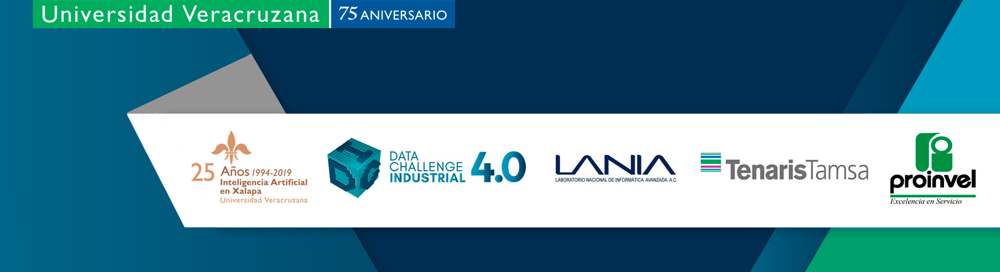

PAAII Tutorial
As part of the local activities around the Mexican International Conference MICAI 2019, the Centro de Investigación en Inteligencia Artificial, CIIA, of the Universidad Veracruzana, UV, announces the
Predictive Analytics and Artificial Intelligence for the Industry 4.0 Tutorial
Tuesday October 29th 2019
The tutorial is developed in the frame of the Data Challenge Industrial 4.0 event that will take place in the CIIA on october 26-27, 2019. You can read more about this event in our official channels .
.
Tutorial speakers
The tutorial is jointly prepared by Dr. Horacio Tapia-McClung (CIIA) and Dr. Gibran Etcheverry Dodger (UDLAP). If you are interested, please use the register link below and let us know. We would be very pleased to see you there.
Analytics is revolutionizing our every day lives. From consumer electronics, smartphones, smart appliances, smart cars, etc., to new bussines models, Netflix, Uber, Aribnb, etc., many if not all these comodities are powered by a large and increasing number of new methods, tools and technologies.
Something similar is slowly happening across industrial sectors, but in a data-driven world, industrial data analytics is still far from the innovations we have experienced in the past two decades.
In Mexico these changes occur at a slower rate than in other places around the world like Germany, the U.S., Japan, etc. Nevertheless, data analytics in industrial settings will be crucial in the next 5 years as discussions and initiatives on the Industrial Internet of Things and ‘Industria 4.0' are become a reality in the country.
This workshop is intended to present some examples of Predictive Analytics and Artificial Intelligence computational methods applied to concrete problems that often occur accross diverse industry sectors, using the Python programming language. The selected cases are:
- Predicting failure in equipment using sensor data;
- Predicting Time To Failure or Remaining Useful Life, and
- Chan chan chan chan
In this workshop we will use the Python programming language using Google's Colaboratory free Jupyter notebook environment. We are going to assume familiarity with the Python programming language although no strict previous experience with is required.
The
Here is an example image of another CodeLab that I created:
Resources:
- This codelab's original home is located here: Link to Codelab
- The markdown for the original codelab is located here: codelab.md
- Google CodeLabs Tools Github - The repo that contains the claat tool we'll be using today
- Google Group for CodeLab Authors - great forum for asking questions about codelabs and discussing future functionality
- A blog that I used when getting started with Google Codelabs